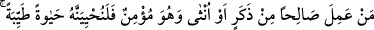
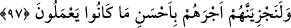

97. Erkek veya kadın, mümin olarak kim iyi amel işlerse, onu mutlaka güzel bir
hayat ile yaşatırız. Ve mükâfatlarını, elbette yapmakta olduklarının en güzeli ile
veririz.
“Erkek veya kadın,” ikisinin de zikredilmesi, aşağıdaki ilâhî vâdin her ikisine de
şâmil olması içindir. “ ” lafzının çoğu defa erkekler için kullanıldığı, kadınların çoğu
ahkâm ve hitâba ancak tağlib ve erkeklere tâbi olmak yoluyla dâhil olduğu dikkate
alınarak, bu lafzın burada da yalnızca erkeklere tahsis edilmiş olabileceği
vehmedilmesin diyedir.
“Mümin olarak” Mü’min olmakla sınırlandırılması, sevabı hak kazanma konusunda
küfür ehlinin amellerine îtibar edilmediği içindir. Ancak şu var ki yaptıkları iyi işler
azablarının hafiflemesine sebep olabilir. Nitekim bir hadiste şöyle buyrulmuştur. “Allah
Teâlâ, cömert kâfirin cehenneme atılmasını emreder. Cehennemin muhafızı Mâlik’e
der ki: “Ona azâb et, dünyada yaptığı cömertliği kadar da azabından hafiflet.”[198]
Nitekim Tefsîr-i Semerkandî’de böyle geçmektedir. Şu rivâyet de bunu kuvvetlendirir:
“Hz. Peygamber (s.a.) mîrâca çıkınca cehheneme muttalî oldu. Orada etrafı çevrili bir
yer gördü. İçerisinde kendisine ateş isâbet etmeyen bir adam vardı. Cebrâil (a.s.) dedi
ki: Şu adam Hatim Tâî’dir. Sehâvet ve cömertliğinden dolayı Allah ondan cehennem
azâbını uzaklaştırdı.” Nitekim Enîsü’l-vahde’de böyle geçmektedir.
“Kim iyi amel işlerse” hangi amel olursa olsun, kim salih amel işlerse, demektir.
Sâlih amel, hevâ ve riyâ karışmayan yalnızca Allah’ın rızası gözetilen her çeşit ameldir.
Heva ile riya arasında şu fark vardır: Heva nefisle, riya ise insanlarla ilgilidir.
“Onu” dünyada “mutlaka güzel bir hayat ile yaşatırız.” Bu kişi şâyet zengin ise iyi
bir hayat yaşadığı açıktır. Fakir ise onun iyi hayatı kanâat, ilâhî taksîme razı olmak ve
âhirette büyük ecri ummaktır. Tıpkı oruç tutan kimse gibi ki gündüzünü geceleyin yemek
yiyeceğini düşünerek güzel bir duygu ile geçirir. Kâfir ise böyle değildir. Eğer fakirse
bu dünyadaki durumu zâten ortadadır. Zenginse mala karşı hırs ve tamahı, herhangi bir
sebeple elinden kaybetme korkusu onun gönlüne göre hoş bir hayat yaşamasına mâni
olur.
“Ve mükâfatlarını, elbette yapmakta olduklarının en güzeli ile veririz.” yâni
işledikleri iyi amellerin karşılığı olarak âhirette onları kendilerine has güzel
mükafatlarla mükafatlandırırız.
Yukarıda “sabredenler” ile ilgili olarak zikredildiği gibi “en güzeli ile”nin amellere
izâfe edilmesi, mükâfâtın da güzellikte kemâl üzere olduğunu bildirmek içindir.
et-Te’vilâtü’n-necmiyye’de der ki: “Erkek” ile kalbe, “kadın” ile nefse işaret vardır.
Nefis bakımından sâlih amel, Allah’tan ittika ederek şeriatla amel etmek, onun kötü sıfat